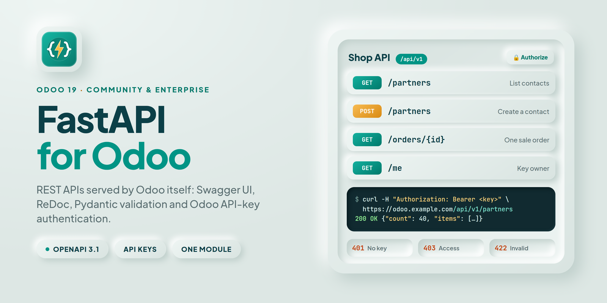
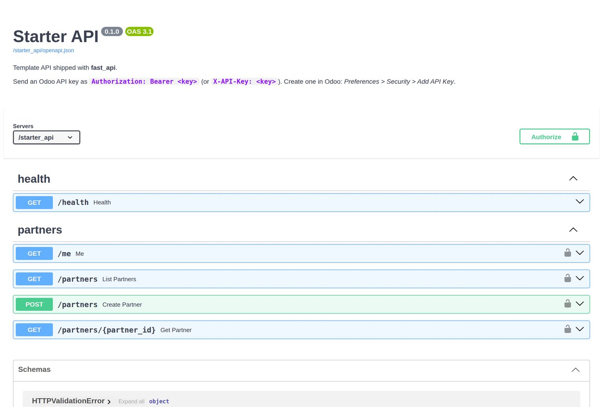
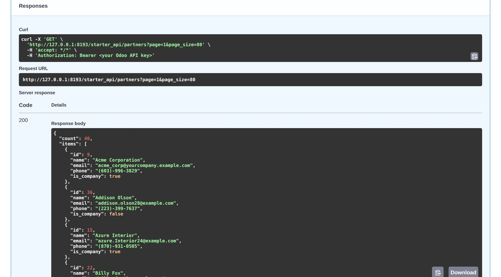
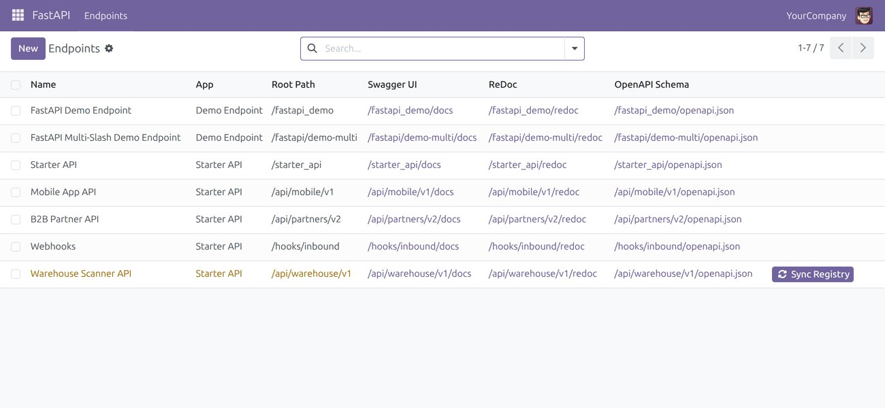
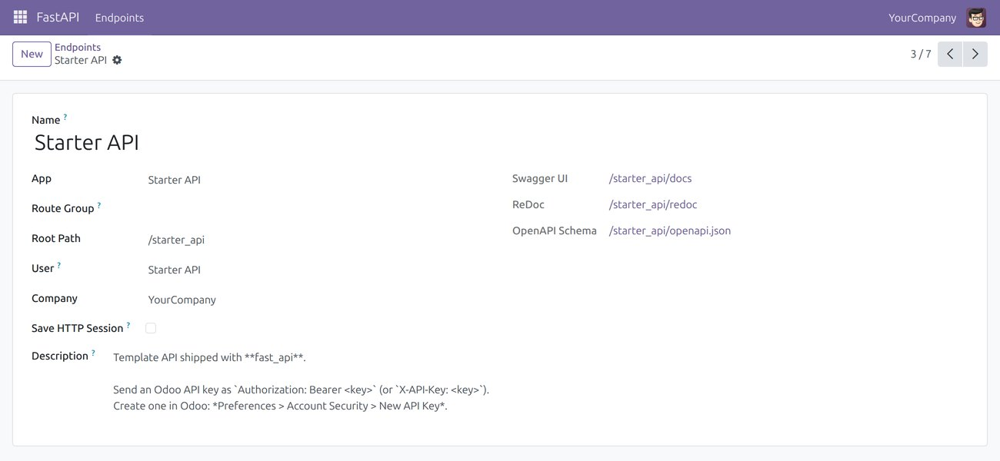
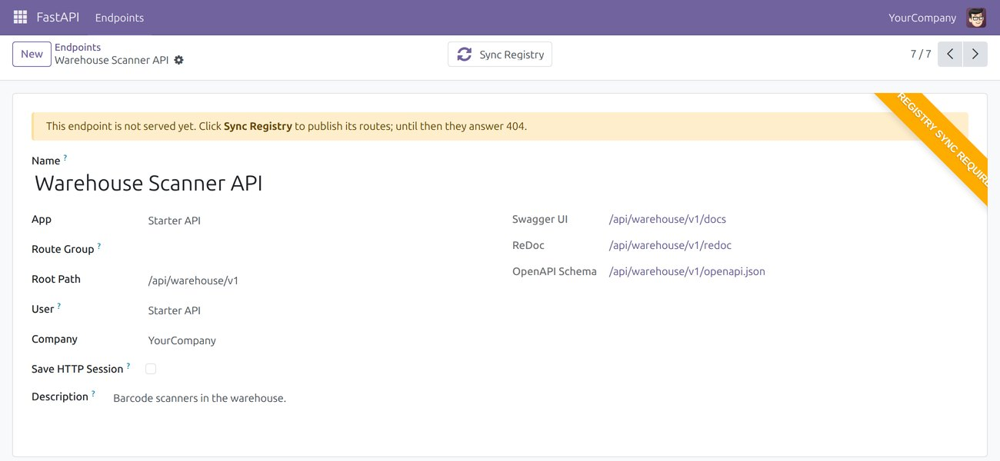
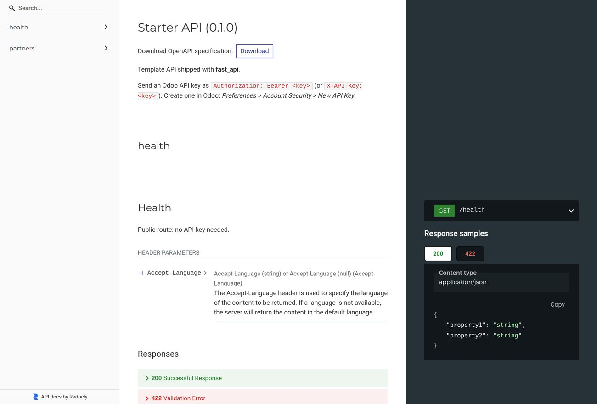
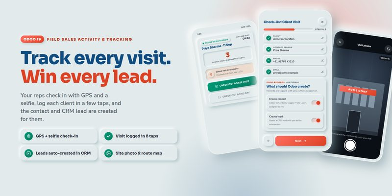
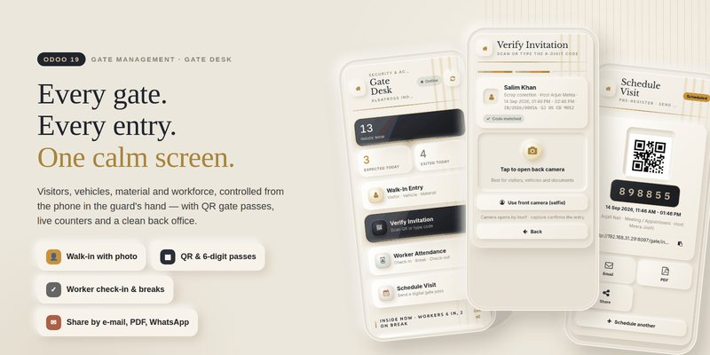
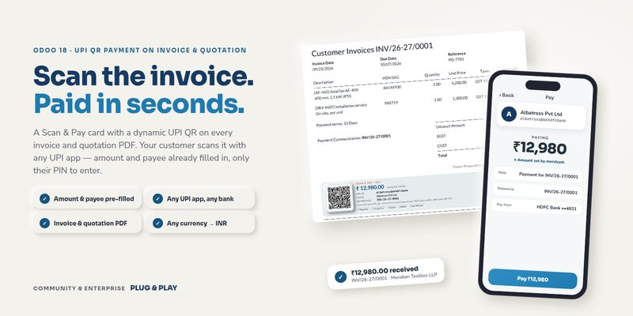

FastAPI for Odoo · Odoo 19
Your mobile app, your website, your warehouse scanners and your partners all want Odoo data. Serve it through clean, documented, secure endpoints written with FastAPI, the Python framework developers love — running inside Odoo, on Odoo's own port, with Odoo's users and access rights.


Sound familiar?
RPC hands them generic search_read calls: no schema, no docs, field names to guess. Every screen becomes a support ticket.
Each custom route re-does parsing, validation, authentication and error handling, a little differently every time, and nobody documents it.
Integrators ask for an OpenAPI file and an API key. You have neither, so the integration slips another week.
FastAPI for Odoo fixes all three: routes shaped for your clients, docs generated for you, Odoo's own API keys, and real HTTP errors — in one module.
How it works
No separate service, no proxy rules, no second set of database credentials. Your API lives inside Odoo and calls your models directly, in the same transaction.
Once, in the environment that runs Odoo. On Odoo.sh, list them in requirements.txt.
$ pip install fastapi a2wsgi \
python-multipart ujson \
parse-accept-languagePlain FastAPI. Odoo comes in through a dependency: here, an environment running as the owner of the API key.
@router.get("/partners/{pid}") def partner(pid: int, env=Depends(api_key_user_env)): p = env["res.partner"].browse(pid) return {"id": p.id, "name": p.name}
Register the app on fastapi.endpoint, give it a root path such as /shop, click Sync Registry.
class FastapiEndpoint(models.Model): _inherit = "fastapi.endpoint" app = fields.Selection(selection_add= [("shop", "Shop API")], ondelete={"shop": "cascade"}) def _get_fastapi_routers(self): if self.app == "shop": return [router] return super()._get_fastapi_routers()
Your API is live on Odoo's own port, with interactive docs next to it.
$ curl -H "Authorization: Bearer $KEY" \ https://odoo.example.com/shop/partners/7 200 {"id": 7, "name": "Deco Addict"} # docs: /shop/docs schema: /shop/openapi.json
Self-documenting
Every endpoint publishes its own documentation from your type hints and docstrings. Send one link; skip the meetings.
/docs: try every route in the browser, with an Authorize button for your API key./redoc: a clean, searchable reference to hand to partners./openapi.json: import into Postman, or generate typed clients for Flutter, TypeScript, Kotlin...Security built in
Use the API keys Odoo already manages, the logins people already have, or plug in your own scheme. A call without valid credentials gets a clean 401 — and never a byte of data.

Users create keys in Preferences › Security › Add API Key. Send one as Authorization: Bearer or X-API-Key. Expired keys and archived users are refused.
Odoo login with a password or an API key, through Odoo's own authentication, brute-force protection included.
JWT, OAuth2, signed webhooks: write one FastAPI dependency that returns the partner, and record rules filter on it.
Why not just use RPC?
Odoo's RPC is great for scripts. Hand-written controllers are fine for one route. For an API other people build on, you want this.
| This app | Odoo RPC | Custom code | |
|---|---|---|---|
| URLs and payloads designed for your clients | ✓ | ✗ generic | ✓ |
| Interactive docs and OpenAPI schema | ✓ automatic | ✗ | ✗ by hand |
| Typed validation of every request | ✓ Pydantic | ✗ | ✗ by hand |
| API keys and HTTP Basic | ✓ built in | ✓ | ✗ by hand |
| Odoo access rights and record rules | ✓ | ✓ | up to you |
| Clear HTTP status codes and JSON errors | ✓ | generic | ✗ by hand |
| Test helper for your routes | ✓ | – | ✗ |
Errors
Raise the Odoo exceptions you already use. The client gets the matching status and a JSON body; the database transaction is rolled back.
UserError / ValidationError business ruleAccessError not allowedMissingError record not foundConcurrency errors are retried automatically, request body included.
@router.get("/orders/{oid}") def order(oid: int, env=Depends(api_key_user_env)): order = env["sale.order"].browse(oid).exists() if not order: raise MissingError("Order not found") return {"name": order.name} $ curl -i -H "X-API-Key: $KEY" .../orders/999 HTTP/1.1 404 {"detail": "Order not found"}
In Odoo
The FastAPI app lists your endpoints with their paths and documentation links. Administrators manage them; the FastAPI / User role can look.

Root path, app, and one-click links to Swagger UI, ReDoc and the schema. Endpoints waiting for publication stand out.

The user it runs as, its company, whether it keeps a session, and the Markdown description shown at the top of its docs.

A new or moved endpoint goes live with Sync Registry, in every worker at once. Archive it to take it offline.

ReDoc renders the same schema as a readable, searchable reference with request and response samples.
Everything included
Request bodies, query parameters and responses are typed and checked. Bad input gets a 422 with the exact field in error, before any Odoo code runs.
With api_key_user_env every call runs as the key owner: the same access rights, record rules and multi-company rules as in the web client.
The Accept-Language header picks among the languages installed in Odoo, so translated names and messages come back translated.
FastAPITransactionCase runs your routers in-process inside a test transaction, with a chosen user and partner. No HTTP server needed.
Apps are pooled per worker and rebuilt automatically when an endpoint changes, in every worker. Works with multi-worker and threaded servers.
examples/starter_api: health check, me, paged search, read and create, with six tests. Copy, rename, extend.
Mount as many endpoints as you need (/api/mobile/v1, /hooks, ...), each with its own user, company, docs and settings.
Refuses to install over OCA's fastapi instead of breaking it. Uninstalling removes the endpoints and the route table.
A README covering installation, Odoo.sh, multi-database servers, authentication patterns, errors, testing and troubleshooting.
Pricing
Building, documenting and securing an API layer by hand takes days, and then it has to be maintained. This one is ready, covered by automated tests on Odoo 18, 19 and 20, and built on the FastAPI integration of the Odoo Community Association.
USD 18, one time. No subscription, no per-user fee, no limit on endpoints or calls.
Readable LGPL-3 code with a README and a starter template. Extend it any way you like.
Answers within one business day, and free fixes for confirmed bugs for 90 days.
Compatibility
On a multi-database server, callers send the X-Odoo-Database header or add ?db=<name> to the URL.
| Odoo version | 19.0 — Community and Enterprise |
|---|---|
| Depends on | base, web |
| Python | 3.10+ with fastapi ≥ 0.110, pydantic 2, a2wsgi ≥ 1.10.6, python-multipart, ujson, parse-accept-language |
| Hosting | On-premise and Odoo.sh. Not Odoo Online. |
| Tested with | fastapi 0.141, starlette 1.6, pydantic 2.13, Python 3.12 |
| Tests | 60+ automated tests (routing, auth, errors, retries, languages, install hooks) plus 6 for the starter |
| Licence | LGPL-3 |
Security model
Runs the app before authentication. Its runner group reads its own user and endpoint, nothing else.
Routes using api_key_user_env run with that user's rights, exactly like the web client.
For customer-facing APIs: record rules can filter on authenticated_partner_id.
FAQ
No. You pay USD 18 once. There is no per-user, per-database or per-call fee, and the source code is yours to read and extend under LGPL-3.
Basic Python is enough to start: the starter template already covers search, read and create with API-key authentication and tests. FastAPI's own documentation is among the best in Python.
No. Odoo Online does not accept custom Python modules or packages. Use Odoo.sh or your own server; on Odoo.sh, add the packages to requirements.txt.
fastapi, pydantic 2, python-multipart, ujson, a2wsgi and parse-accept-language. Odoo refuses the install, with the missing package named, until they are present.
An endpoint only answers once it is published: click Sync Registry on it. The form tells you when it is needed. API modules do it at install with one line of XML.
Send the X-Odoo-Database: <name> header, or add ?db=<name> and set server_wide_modules = base,rpc,web,fast_api. A single database, or dbfilter = ^%d$, needs nothing.
fastapi?No: this module replaces it and endpoint_route_handler, and refuses to install while they are installed. Code written for them ports by changing depends and the odoo.addons.fastapi imports.
Endpoints run as a dedicated user that can read almost nothing until a request is authenticated. API keys can expire and be revoked by their owner; archived users are refused. Serve Odoo over HTTPS.
Swagger UI and ReDoc load their JavaScript from the jsDelivr CDN in your browser. The API itself does not need it.
Override _get_fastapi_app_middlewares() to add Starlette's CORSMiddleware. Any authentication (JWT, OAuth2, HMAC) is a FastAPI dependency returning a partner or a user.
Explore our apps
The same care, for the rest of your business: field teams, security gates, internal chat and payments.

Track every visit. Win every lead.
GPS and selfie check-in, client visits logged in a few taps, contacts and CRM leads created for your reps automatically.
View on Odoo Apps →
Every gate, every entry, one calm screen.
Visitors, vehicles, material and workforce controlled from the guard's phone, with QR gate passes and a clean back office.
View on Odoo Apps →Every conversation, one console.
Read direct chats, groups and channels from a dual-pane console, with search, date filters and attachments. Read-only.
View on Odoo Apps →
Scan the invoice. Paid in seconds.
A dynamic UPI QR with amount and payee pre-filled on every invoice and quotation PDF. Any UPI app, any currency.
View on Odoo Apps →Talk to us
We build Odoo apps and integrations for a living. We answer within one business day and ship fixes for confirmed bugs free of charge for 90 days after purchase.
FastAPI - REST API Framework · © Albatross · Licence LGPL-3
Built on the FastAPI integration of the Odoo Community Association (ACSONE SA/NV, Camptocamp SA).